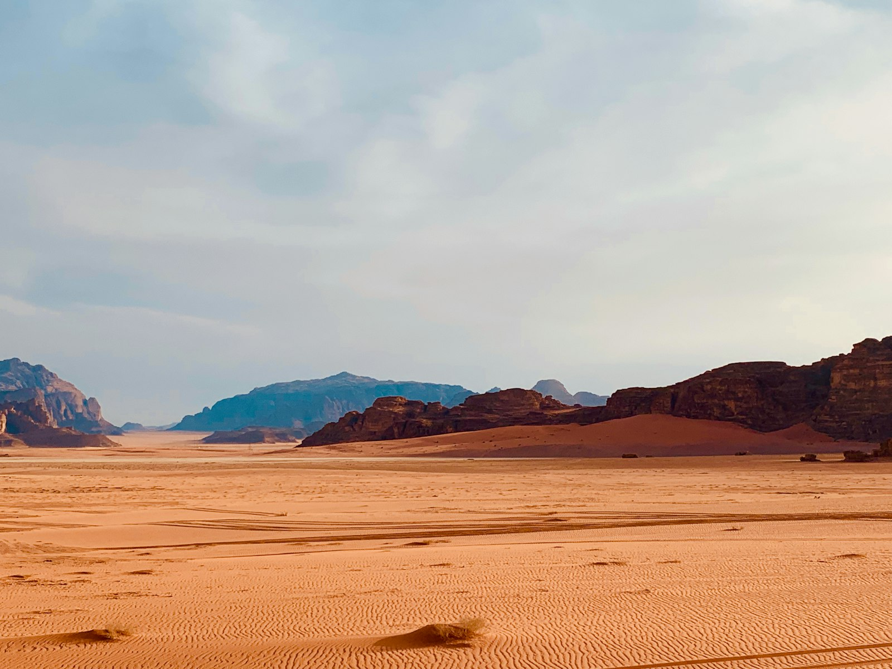
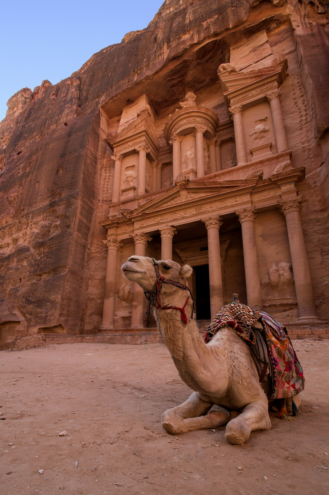
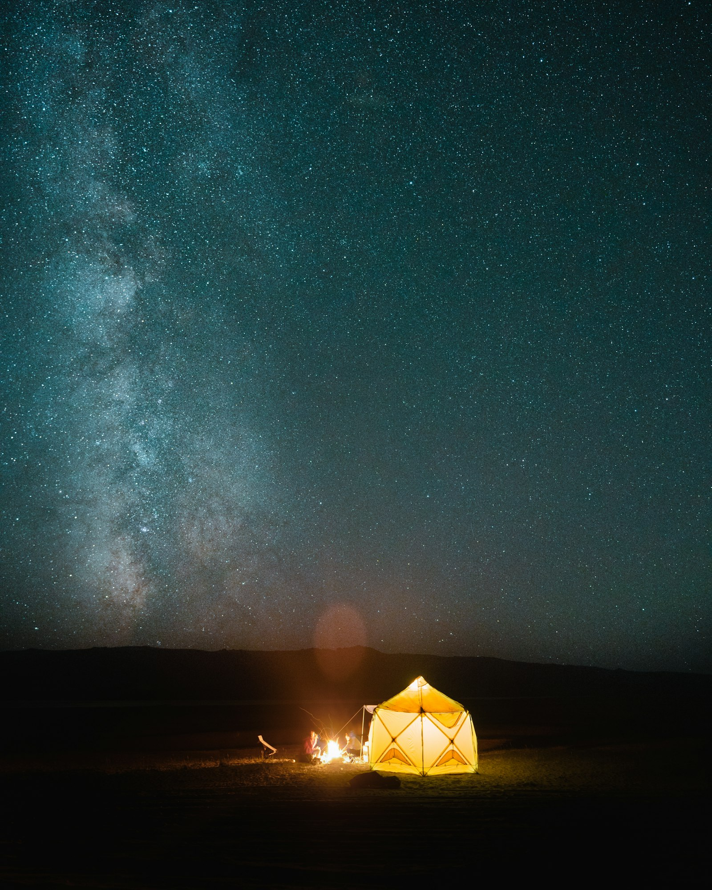

Three set routes, each shaped over years. Pick a fixed departure or ask us to run any of them privately, on your own dates.

Three days across the protected area by 4x4 and on foot. We climb Burdah rock arch at first light, cross the red dunes at Um Fruth, and sleep two nights in camps far from the day-trippers. Tea with the Zalabia families, a scramble through Khazali canyon, and a sunset from a ridge you'll remember.

Most people see Petra from the Siq and leave. We come in from the back, over the hills from Little Petra, and reach the Monastery before the crowds arrive. A full second day inside the city with a guide who reads the Nabataean carvings like a book.

Our flagship. From the cliffs of Dana down the ancient trail, two days inside Petra, deep into Wadi Rum, and out to the Red Sea at Aqaba. Six days that string together the best of southern Jordan without ever feeling rushed. Small group, one guide the whole way.
Travelling as a family, a couple, or a group of friends? We run any of our routes privately, and we build custom itineraries - balloon flights over Rum, diving in Aqaba, a night in Feynan. Tell us what you're imagining.